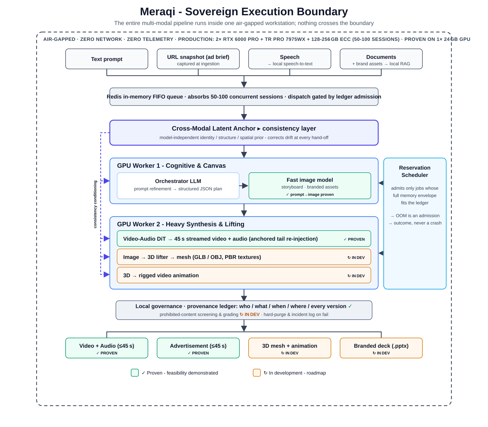

Project Summary
Overview. This project introduces a software-defined hardware isolation layer that achieves deterministic, zero-uncontained-fault execution of multi-modal generative AI on resource-constrained computing nodes. By establishing a rigid mathematical mapping between inference request parameters and measured hardware envelopes, the platform transforms volatile, stochastic generative AI execution into a predictable, admission-controlled queuing model: memory exhaustion becomes an admission outcome (queue, degrade, or reject), never a runtime failure.
Intellectual Merit. The intellectual merit lies in a closed-loop drift-detection architecture that continuously reconciles observed peak VRAM and host RAM, decomposed per memory term, against multi-layered constraints: a reservation ledger, container control groups, and CUDA per-process limits. The research pioneers a streaming, first-in-first-out bounded-working-set execution model that treats tensor generation as a continuous bounded working set, structurally resolving memory fragmentation and cascading failures in chained model workflows spanning text, speech, image, video, and 3D. The protocol carries a formal admission model with a provable containment property whose single empirical assumption is explicitly isolated, continuously measured, and automatically re-calibrated. The method is model-agnostic by construction: admitting a new model family is a calibration-data change, never a scheduler change, so the contribution generalizes across current and future architectures and, beyond generative AI, to any accelerator-bound workload with stochastic memory demand.
Broader Impacts. Successful development of this technology democratizes high-tier multi-modal AI for small and medium enterprises, academic institutions, and privacy-critical sectors by removing the requirement for elastic cloud data centers. Absolute runtime stability on ubiquitous, consumer-grade hardware lowers economic barriers to advanced generative capability, reduces data-center energy waste caused by redundant error-and-retry cycles, and secures data sovereignty for organizations whose data cannot leave their premises.
1. The Core Scientific Problem
Multi-modal generative AI pipelines exhibit extreme runtime stochasticity. Request shape (resolution, frame count, duration, token count, mesh complexity) dynamically alters the tensor allocation graph, causing unpredictable memory fragmentation and catastrophic CUDA out-of-memory (OOM) failures. On a shared accelerator the failure is systemic rather than local: an OOM inside one worker can take down a shared process, a host OOM can kill the database or queue that holds job state, and either produces silent job loss and unaccounted compute time.
Current practice offers two responses, and both fail on the class of hardware this project targets. Cloud elasticity absorbs stochastic demand by adding machines, which is unavailable on edge and sovereign compute nodes where data cannot leave the building. Static concurrency caps absorb it by pessimism, and are wrong the first time a heavier request shape arrives.
The failure mode is empirically established in our own laboratory record: an identical 45-second video generation workload failed with OOM at roughly six seconds before a streaming redesign, and afterward sustained 45 seconds of continuous, coherent video with synchronized audio on a single 24 GB consumer GPU. That result proves the failure mode is structural and the bounded-working-set cure is feasible. It does not yet prove determinism under sustained heterogeneous load, which is the research subject of this proposal.
Three structural facts about the workload make naive admission schemes unsound, and any candidate protocol must survive all three:
- Heavy profiles nearly fill the device. A production video-diffusion model occupies roughly 22 GB of weights on a 32 GB device. Any safety margin that scales with total footprint rather than with the variable portion of the footprint calibrates such models as unschedulable on the hardware that exists.
- Long jobs hold state across steps. Streaming video conditions chunk N+1 on chunk N's latent tail and holds it for the life of the run. This state is neither model weights nor per-step scratch, and a two-term memory model cannot express it.
- Model families are replaceable but not drop-in. Families differ in which memory term dominates, and that difference is precisely what decides schedulability on a fixed-memory device. The admission layer must treat a model family as swappable calibration data, never as a hardcoded assumption.
2. Proposed Innovation: A Closed-Loop Deterministic Admission-Control Protocol
2.1 Profiles: binding free parameters to mathematical keys
The protocol admits no free-form request. Every schedulable job resolves to a profile, a rigid multidimensional key: (model hash, task, maximum geometry, precision, tiling configuration, framework and driver versions, GPU model, placement slot). Free-form inference parameters never reach an executing worker. Binding requests to keys eliminates runtime execution variance at the interface, which converts an unbounded scheduling problem into a finite calibrated one.
2.2 The three-term memory envelope
Each profile phase carries a measured envelope of three terms with distinct lifetimes and distinct uncertainty: r (resident bytes: weights, charged once per loaded model, near-zero uncertainty), h (held bytes: cross-step job state, low uncertainty, computable from geometry), and t (transient bytes: within-step scratch, the only high-uncertainty term). Only the uncertain term receives a safety factor k_p and a fragmentation reserve f_p:
t*_{p,i} = ceil(k_p * t_{p,i}) + f_p (1)
E_{p,i} = r_{p,i} + h_{p,i} + t*_{p,i}
E_p = max over phases i of E_{p,i} (2)2.3 Ledger admission
Each device partition (slot) s with byte budget B_s maintains a reservation ledger charging residents once per loaded model and held-plus-transient per active job:
L_s = SUM(r_m over loaded models m)
+ SUM(h_j + t*_j over active jobs j) (3)
ADMIT(j, s) iff L_s + D_j <= B_s
D_j = max over phases i of ( [model of phase i not loaded] * r_{p,i}
+ h_{p,i} + t*_{p,i} ) (4)Two static gates make the arithmetic closed: partition budgets plus a measured process reserve R_g (CUDA context and library overhead) never exceed device capacity C_g, and no active profile may exceed its own slot:
SUM(B_s over slots of g) + R_g <= C_g E_p <= B_slot(p) (5)
Reservations are leases renewed by worker heartbeat, so a failed worker returns its capacity within one lease interval. Concurrency is derived from the ledger, never configured by hand.
2.4 The safety property, stated honestly
Four named assumptions carry all of the empiricism: A1 envelope soundness (realized usage stays inside the calibrated envelope; statistical, purchased by calibration and policed by the feedback loop below), A2 single dispatcher (no allocation outside a reservation), A3 phase discipline (residents of distinct phases never coexist; handover is evict, verify, load), and A4 a bounded process count. Under A1 through A4 with the gates of (5), device memory exhaustion is unreachable: actual usage never exceeds capacity, by induction over scheduler events. Because A1 is statistical rather than certain, residual risk factors explicitly:
P(uncontained failure) <= P(not A1) * P(containment fails | not A1) (6)
The feedback loop drives the first factor down; a containment hierarchy (per-worker control groups, allocator limits, out-of-memory score isolation of the control plane, crash-only workers) drives the second. The design never relies on either factor being zero, which is what distinguishes an engineering guarantee from an aspiration: memory exhaustion is structurally impossible for the control plane and strictly contained to one worker for the data plane.
2.5 Why three terms: a separation result
The decomposition is not bookkeeping; it is what makes heavy models schedulable at all. For q concurrent jobs sharing one loaded model, the three-term ledger and the conventional peak-times-margin ledger charge:
Charge3(q) = r + q * (h + k*t) Charge1(q) = q * k * (r + h + t) Charge1(q) - Charge3(q) = (q*k - 1)*r + q*(k - 1)*h > 0 (7)
Every workload feasible under peak-times-margin is feasible under the three-term ledger and not conversely, with a gap that grows linearly in concurrency with slope k*r. Instantiated: with k = 1.25, a 22 GB-resident video model on a 32 GB device is unschedulable under peak-times-margin already at one concurrent job, because k*(r + h + t) crosses usable capacity for any realistic h + t, while the three-term ledger admits it with headroom. The conventional scheme multiplies the one term that has near-zero uncertainty; the proposed scheme multiplies only the term that is actually uncertain.
2.6 The closed loop: measurement as a first-class protocol element
The research core is the self-correcting feedback loop: metering ledger, then drift detection, then automated re-calibration.
A deploy-time calibration engine measures each profile at maximum declared geometry with a strict probe sequence (warm-up, cache release, then measurement, each term on one declared measurement basis), yielding an exact decomposition of the observed peak rather than three independent estimates:
resident + held + transient = max_reserved(job) (8)
The sequence is provably conservative: any error in splitting the peak between the held and transient terms lands in the transient term, the only term the safety factor multiplies, so decomposition error can oversize a reservation but never undersize it.
At runtime, every job writes its observed peak per term to a metering ledger. Drift detection compares the observed transient distribution against the reserved envelope and re-derives the safety factor from data:
k_p = Q99(T_p) / Q50(T_p) once enough jobs observed, else 1.25 alert and re-calibrate when p99 observed transient exceeds 0.9 * reserved transient envelope (9)
A circuit breaker demotes a profile whose windowed OOM rate crosses a threshold, and any toolchain change (framework, CUDA, driver) statically invalidates affected calibrations and blocks dispatch until re-calibration, so the calibration table can never silently go stale. The scientific question is whether this loop converges and holds: whether measured envelopes plus a data-derived safety factor can maintain assumption A1 across model families and request mixes without human tuning.
2.7 Degraded-mode execution without corrupted output
When a request cannot be admitted within its latency budget, a fallback ladder degrades it at admission time only, stepping down resolution, duration, then precision, each rung itself a calibrated profile. After a job emits its first output artifact the ladder is closed to it: a failed job resumes at the same rung from persisted state or fails cleanly, because changing resolution partway through a streamed deliverable is a corrupt output, not a degraded one. Degradation is thus a controlled, metered admission decision, never an uncontrolled runtime scramble.
3. Research Question and Hypotheses
Research question. Can a self-correcting feedback loop (metering ledger, drift detection, automated re-calibration) dynamically maintain a non-fragmenting memory state with zero uncontained OOM failures across distinct model families (autoregressive LLM serving, latent diffusion for image and video, 3D mesh generation, speech synthesis) on consumer-grade hardware, without destroying pipeline latency?
- H1, schedulability. The three-term envelope admits real heavy-model workloads that are provably infeasible under peak-times-margin admission on the same hardware, per the separation result (7).
- H2, closed-loop stability. The feedback loop holds envelope-soundness violations below the containment threshold across sustained heterogeneous load: zero uncontained failures over 100+ end-to-end multi-modal runs, with the data-derived safety factor converging per profile.
- H3, bounded cost of determinism. The protocol's overhead (admission latency, reserved headroom, padding) leaves end-to-end wall-clock within already-demonstrated bounds for the 45-second reference workload, preserving product-viable latency while adding the determinism guarantee.
4. Phase I Research Plan
Research platform: a dual-GPU (2x 32 GB) workstation-class node, deliberately consumer-grade; feasibility results to date were produced on a single 24 GB GPU. All experiments run fully air-gapped.
- Task 1 · M1-2Calibration engine. Implement the profile schema and the three-term probe sequence, per phase, per model family, including measured CUDA context cost and library overhead. Success: calibrated envelopes for all four families with the decomposition identity (8) holding exactly and every profile passing the static gates (5).
- Task 2 · M2-3Reservation scheduler and ledger. Implement ledger admission (3)-(4) with leases, device partitions, and derived concurrency. Success: the partition non-interference test passes (saturating the batch partition cannot change admission feasibility on the interactive partition), and concurrency provably tracks the ledger rather than a configuration constant.
- Task 3 · M3-5The closed loop. Implement per-term metering, drift detection, the data-derived safety factor (9), the circuit breaker, and re-calibration as a gate on any toolchain change. Success: injected drift (altered request mixes, synthetic allocator pressure) triggers alert and re-calibration before any uncontained failure;
k_pconverges per profile and its converged values are reported against the 1.25 bootstrap. - Task 4 · M5-6Adversarial validation. Chaos testing injects synthetic CUDA OOM inside workers and asserts single-worker blast radius, lease release, correct resume-or-degrade behavior, and 100% control-plane uptime. A reconciliation test kills the scheduler mid-flight and asserts the rebuilt ledger matches live reservations with no ghost capacity in either direction. A sustained soak executes 100+ end-to-end multi-modal runs (text, speech, image, video, 3D) under mixed load. Success criteria, reported quantitatively: zero uncontained OOM events; 100% control-plane availability under fault injection; wall-clock distribution against H3.
Phase I closes with a public-methodology technical report: the formal model, the calibration protocol, measured envelopes per family, closed-loop convergence data, and the full adversarial test matrix, so the result is reproducible science rather than a configuration anecdote.
5. Deliberate Trade-offs
This protocol purchases certainty with capacity, and states the price explicitly:
- A 25% bootstrap safety factor on the transient term, plus a measured process reserve, is reserved headroom that reduces peak throughput in exchange for zero uncontained failures. The factor is data-derived after convergence, so the price falls as evidence accumulates.
- Inputs are padded to fixed shape buckets so the allocator reuses rather than grows; padding wastes some compute in exchange for a stable fragmentation signal.
- Calibration is a real deploy-time cost, repeated on any toolchain change, and re-calibration is never performed against live traffic.
- Static partitions idle capacity when demand is skewed; both partitions are calibrated slots rather than a free pool.
Trading nominal efficiency for structural predictability is the point of the research: the hypothesis is that a modest, measured, and continuously re-derived overhead converts stochastic infrastructure into deterministic infrastructure.
6. Broader Impacts
Access. Organizations that cannot use cloud generative AI (healthcare, legal, finance, defense, and any enterprise whose data cannot leave the premises) currently face a choice between compliance and capability. Deterministic execution on consumer-grade hardware removes that choice, and lowers the economic barrier for small and medium enterprises and academic laboratories that cannot fund elastic GPU fleets.
Energy. OOM-and-retry cycles burn accelerator time that produces nothing; retries under contention amplify the pressure that caused the failure. Admission control eliminates the retry storm class entirely, and predictable capacity lets operators size hardware to workload instead of over-provisioning against worst-case stochastic failure.
Sovereignty. The protocol requires no telemetry, no external dependency, and no connectivity; it is designed for environments where data physically cannot leave the building. Figure 2 shows the sovereignty boundary as built: every stage of the pipeline, from ingestion through generation, governance, and output, executes inside one air-gapped workstation, and the reservation scheduler governs dispatch entirely inside that boundary.

Generality. Because the protocol treats model families as calibration data, its results transfer to future model architectures without redesign, and the admission mathematics applies to any accelerator-bound workload with stochastic memory demand beyond generative AI.